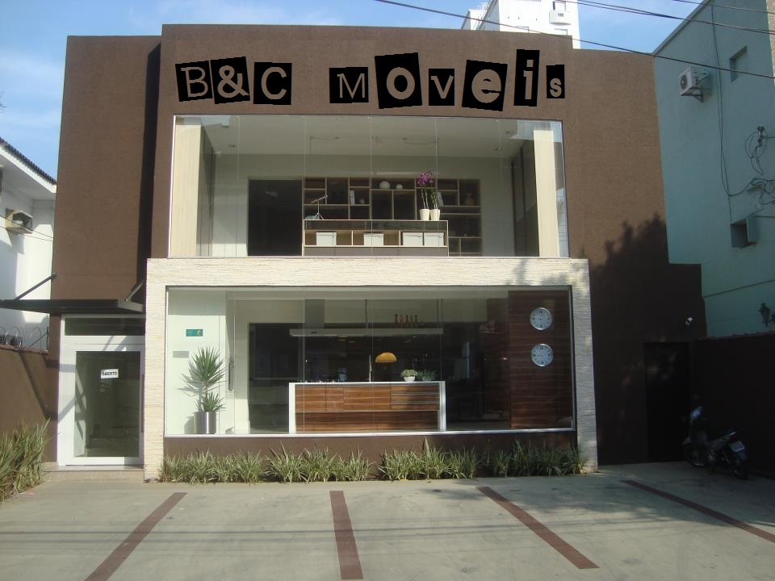

A B&C Moveis, foi fundada em Abril de 2014, com o objetivo de ser uma empresa Moderna e ágil,
voltada para o atendimento diferenciado aos seus clientes.
Possui um conceito moderno de Atendimento Presencial ou Virtual considerando este como um componente
fundamental para o sucesso de qualquer atividade empresarial.
Refere-se a praticidade e atualidades não mais como fatores de excelência, mas sim, como condições
essenciais para manter uma empresa competitiva e eficazmente produtiva.
A empresa foi criada por dois amigos, cujos tinham o objetivo de mostrar praticidade e qualidade
ao adquirir produtos virtualmente porém não descartando a opção de visita a Loja.
A B&C Moveis busca a cada dia o estudo para o alcanço da atualidade e praticidade dos seus clientes.
Além de contar com a estrutura de um site, levando o feedback instantâneo, mantém uma margem competitiva
por meio da entrega imediata de produtos, de excelentes relações com os clientes e de sua capacidade de
se adequar as necessidades deste.
A estrutura e organização do horário de trabalhos que definem em três turnos para que o cliente seja atendido
a qualquer horário.
A infra-estrutura da empresa apresenta de quinze computadores de altíssima qualidade, contando com atendimento
online, sala de bate bato, cadastros e agendamento de consultas.
O diferencial da empresa está desde o auxílio e sugestões até a entrega final do produto.
A empresa não possui terceiros e contam com funcionários próprios.
Possui manuntenção diária nos sites para que não haja invasões: HACKERS e VÍRUS, possui sistema anti-span Plus.
Os faturamentos são apresentados para o governo para que não haja desvio de verbas.